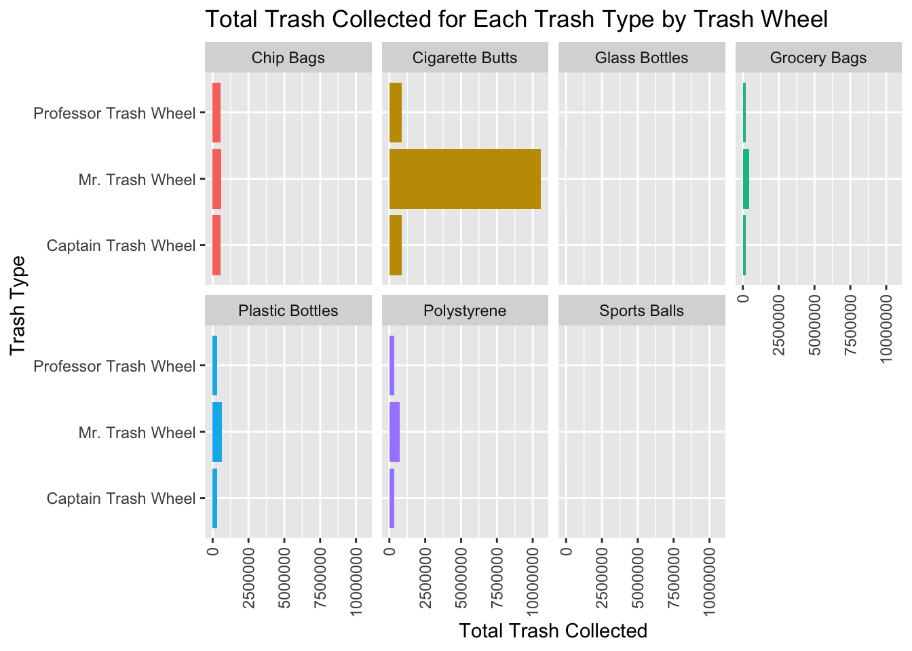
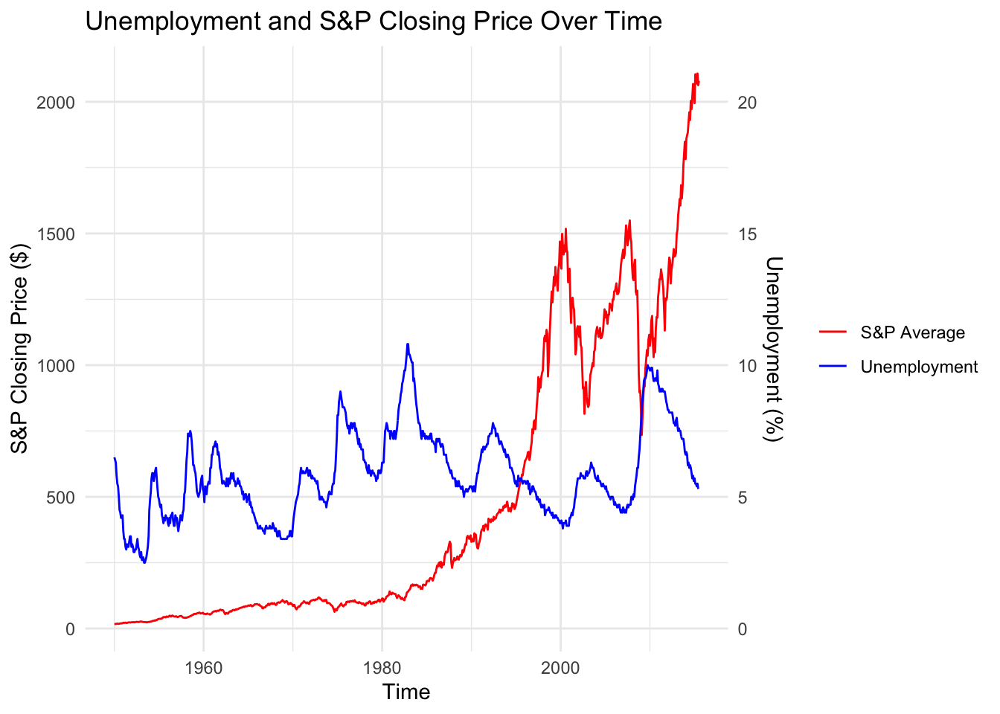
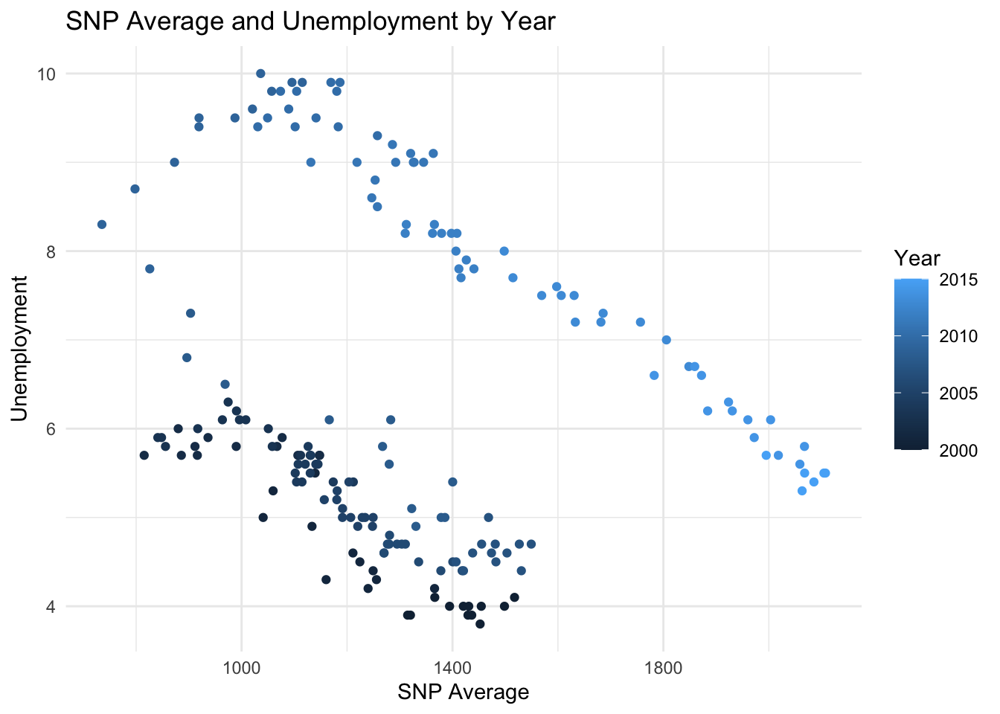

# read in datatrash_wheel_col_total <-read_excel(here("data/Trash-Wheel-Collection-Totals-8-6-19.xlsx"),sheet ="Mr. Trash Wheel") # select sheet in the excel filetrash_wheel_col_total <-clean_names(trash_wheel_col_total) trash_wheel_col_total <- trash_wheel_col_total %>%filter(!is.na(dumpster)) # gets rid of NA valuestrash_wheel_col_total <- trash_wheel_col_total %>%mutate("wheel"="Mr. Trash Wheel") # creates new columntrash_wheel_col_total <- trash_wheel_col_total %>%select(-x15, -x16, -x17) # getting rid of extra columns
# read excel fileprof_trash_wheel <-read_excel(here("data/Trash-Wheel-Collection-Totals-8-6-19.xlsx"), sheet ="Professor Trash Wheel") # select sheet from excel fileprof_trash_wheel <-clean_names(prof_trash_wheel) prof_trash_wheel <- prof_trash_wheel %>%filter(!is.na(dumpster)) # get rid of rows with na values in dumpster columnprof_trash_wheel <- prof_trash_wheel %>%mutate("wheel"="Professor Trash Wheel") # create new column
# read excel filecap_trash_wheel <-read_excel(here("data/Trash-Wheel-Collection-Totals-8-6-19.xlsx"), sheet ="Captain Trash Wheel") # select sheet from excel filecap_trash_wheel <-clean_names(cap_trash_wheel) cap_trash_wheel <- prof_trash_wheel %>%filter(!is.na(dumpster)) # get rid of NA valuescap_trash_wheel <- cap_trash_wheel %>%mutate("wheel"="Captain Trash Wheel") # create new columns
# combines rows from all 3 datasetsall_trash_wheels <-bind_rows(trash_wheel_col_total, prof_trash_wheel, cap_trash_wheel) all_trash_wheels <- all_trash_wheels %>%pivot_longer(cols =7:13, names_to ="trash_type", values_to ="number") # makes dataset longercolnames(all_trash_wheels) <-str_to_title(colnames(all_trash_wheels)) # capitalizes column names
all_trash_wheels_totals_June_2018 <- all_trash_wheels %>%filter(Month =="June"& Year ==2018) %>%# gets rows with June 2018group_by(Wheel, Trash_type) %>%# groups by wheel and trash typesummarise("Total_Trash_Collected"=sum(Number)) # adds the trash for each type
all_trash_wheels %>%group_by(Wheel, Trash_type) %>%mutate(Trash_type =str_replace(Trash_type, "_", " "), # replaces _ with spaceTrash_type =str_to_title(Trash_type)) %>%# capitalizessummarise("Total_Trash_Collected"=sum(Number)) %>%ggplot(aes(x = Total_Trash_Collected, y = Wheel, fill = Trash_type)) +geom_col() +facet_wrap(~ Trash_type,ncol =4) +# creates separate graphs for each wheellabs(title ="Total Trash Collected for Each Trash Type by Trash Wheel", x ="Total Trash Collected", y ="Trash Type") +theme(axis.text.x =element_text(angle =90, # turns labels sidewaysvjust =0.5, # centers labelshjust=1), legend.position ="none") # removes legend

Problem 2
snp <-read_csv(here("data/snp.csv")) snp$date <-mdy(snp$date) # changes to date formatfor (i in1:nrow(snp)){ if (year(snp$date[i]) >=2050) { # 1950 - 1968 are incorrectly dated snp$date[i] <- snp$date[i] %m+%years(-100) # subtracts 100 years } } snp <- snp %>%mutate("year"=year(date), # creates year column"month"=month(date)) %>%# creates month columnrename("Date"="date") # capitalizes date
unemployment <-read_csv(here("data/unemployment.csv")) # read csv fileunemployment<- unemployment %>%pivot_longer(cols = Jan:Dec, names_to ="Month", values_to ="Unemployment") # makes data frame longerunemployment <- unemployment %>%mutate(Day =1, # makes all the days 1Date =mdy(paste(Month, Day, Year, sep =" "))) %>%# creates dateselect(-Day) # removes day column
combined <- snp %>%group_by(year, month) %>%# groups by year and monthsummarise(SNP_Average =mean(close)) %>%# average closing for each month of each yearmutate(Day =1, Date =mdy(paste(month, Day, year))) %>%# creates dateselect(-Day) %>%# removes day columninner_join(unemployment) # joins with unemployment by Dateggplot(combined, aes(x = Date)) +geom_line(aes(y = SNP_Average, color ="S&P Average")) +# line plot for SNP Averagegeom_line(aes(y = Unemployment *100, color ="Unemployment")) +# line plot for Unemploymentscale_y_continuous(name ="S&P Closing Price ($)", sec.axis =sec_axis(~. /100, name ="Unemployment (%)")) +# secondary axislabs(title ="Unemployment and S&P Closing Price Over Time", x ="Time") +theme_minimal() +scale_color_manual(values =c("Unemployment"="blue", "S&P Average"="red")) +# colorstheme(legend.title =element_blank()) # remove legend title

Problem 3
snp_average <- snp %>%group_by(year, month) %>%# group by month and yearsummarise("SNP_Average"=mean(close)) %>%# average closing per month in each yearmutate(Day =1, # creates new column dayDate =mdy(paste(month, Day, year))) %>%# creates dateselect(-Day) # removes day columninner_join(snp_average, unemployment) %>%# joins 2 datasetsfilter(year(Date) >=2000) %>%# filters to years greater than 2000ggplot(aes(SNP_Average, Unemployment, color = Year)) +geom_point() +# creates scatterplotlabs(title ="SNP Average and Unemployment by Year", x ="SNP Average") +theme_minimal() # gets rid of background

Problem 4
Unemployment has been relatively cyclical. Every five years or so, unemployment rises and falls. Until the year 2000, the S&P average was rising steadily. However, after the year 2000, unemployment and S&P average for each month have been opposites. As unemployment rises, S&P average falls. However, overall the S&P average has increased from 1958 to 2015. Pre-2008, the unemployment rate decreased and the S&P average increases. After the market crashed in 2008, unemployment rose and the S&P average fell. Eventually unemployment started falling and the S&P average increased.